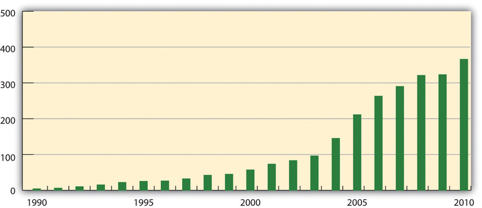

Stonyfield Farm, Inc., or Stonyfield, is an organicNatural or synthesized compounds containing carbon. Natural organic compounds are found in all living systems and in natural products, such as coal, oil, sugars, and wood (water is an inorganic compound). Synthesized organic compounds are manufactured products, such as calcium carbonate and sodium carbonate. Inorganic compounds (such as metals) are obtained usually from mineral sources. yogurt manufacturer located in Londonderry, New Hampshire. The company was founded in 1983 at Stonyfield Farm and got its start using its herd of seven jersey cows to produce organic milk. The milk was then manufactured on-site into organic yogurt using founder Samuel Kaymen’s family recipe. During the first year, Stonyfield sold $56,000 worth of product. By 2010, Stonyfield had grown to be the number one selling organic yogurt brand in the United States and the third-largest selling yogurt brand in the world with more than $375 million in revenue and with profits exceeding the industry average.
This case describes and examines Stonyfield’s sustainability strategyFrom the Greek noun strategos, meaning “the art of the general,” and the Greek verb stratego, meaning “to plan the destruction of one’s enemies through the effective use of resources.” According to Michael Porter, it is not a matter of being better at what you do; it’s a matter of being different at what you do. It identifies those major activities that link a firm’s internal environment to its external environment with the primary goal to achieve organizational purpose by creating value for customers. and its execution. This includes description of the key elements in the implementation of Stonyfield’s sustainability strategy and practices and discussion of how a well-executed sustainability-focused strategy can benefit a business, giving it a competitive advantageA superiority gained by an organization when it can provide the same value as its competitors but at a lower price or can charge higher prices by providing greater value through differentiation. Competitive advantage results from matching core competencies to the opportunities.. The case concludes with consideration of Stonyfield’s future direction; the CEO’s rationale for selling the company to Groupe Danone, a $17 billion food and beverage conglomerate; and exploration of how the relationship between Stonyfield and Danone resulted in an improvement in sustainability efforts for both organizations.
Figure 13.1 Twenty-Year Compounded Annual Growth Rate (CAGR): 23 Percent (in Millions)
Source: Image courtesy of the authors.
What Is Strategy?
Strategy, according to Jack Welch, the former CEO of General Electric, is identifying and making clear cut choices about how to compete. For management scholar Michael Porter at Harvard Business School, strategy requires answering the following questions:
Strategy can be thought of as the actions chosen that direct an organization to a future goal. Its purpose is to position an organization to achieve its objectives through a planned allocation of resources that take into account the state of the external environment and internal resources and accountability to stakeholders.
Competitive advantage provides a company an advantage over its competitors. There are two primary types of competitive advantage—comparative advantage and differential advantage. Comparative advantage, or cost advantage, is a firm’s ability to produce a good or service at a lower cost than its competitors. A differential advantage is created when a firm’s products or services differ from its competitors’ products or services and are seen as providing new or greater value than a competitor’s products by customers, for example, introducing organic yogurt that contributes to the health of people and the planet.
Strategic management is the process by which an organization selects its strategy, the tools that are used to promote the strategy, and the manner by which management leads the organization, and it is specifically how leadership is aligned with strategy.
As part of strategy development, organizations will develop a mission statement. Mission statements are a short statement of the purpose of a company or organization. They provide the framework or context within which the company’s strategies are crafted and executed. Mission statements commit an organization to what its key stakeholders and leaders want it to achieve. The mission statement articulates the company’s purpose, for those in the organization, for consumers, and for all stakeholders. Mission statements will broadly describe an organization’s capabilities, customer focus, and core value proposition.
This case highlights the decisions that Stonyfield has had to make that balance business reality with sustainability ideals and how the company’s focus on strategy and mission, especially a sustainability-focused missionA mission statement that sends the message that the purpose, goals, strategies, and decisions of the organization are centered on sustainability principles, values, and philosophies., has helped the company achieve an effective balance without sacrificing the values of its founders. Throughout the case, connections are made between the concepts of strategy, discussed in the previous sidebar, and the actions of Stonyfield to plan, develop, and execute its strategy.